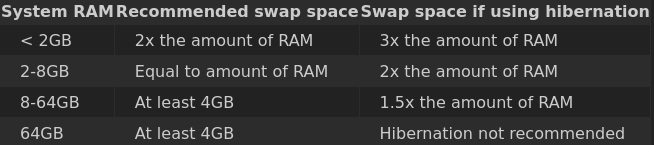

O particionamento para uma distribuição Linux moderna geralmente é muito simples, no entanto, a introdução da inicialização GPT e UEFI traz uma nova complexidade ao processo. Ao criar sua nova tabela de partições, você precisará de uma partição para o sistema de arquivos raiz, junto com uma partição swap e possivelmente outra partição ou duas para facilitar a inicialização, se necessário.
Observe que se o disco já foi inicializado, a parte superior da tela do cfdisk mostrará o layout da partição já presente: Label: dos para o esquema MBR, Label: gpt para o esquema GPT. Se você quiser apenas apagar a tabela de partições antes de iniciar o instalador, use o wipefs(8). Caso contrário, você pode executar o cfdisk(8) manualmente com a opção -z para iniciar com um layout de disco não inicializado; O cfdisk solicitará o tipo de rótulo antes de continuar na tela principal.
As seções a seguir detalham as opções de configuração de partição.
É recomendável que você crie uma tabela de partição MBR se estiver usando um sistema de inicialização do BIOS. Isso limitará o número de partições que você cria a quatro.
É possível usar uma tabela de partição GPT em um sistema BIOS, mas o GRUB exigirá uma partição especial para inicializar corretamente. Esta partição deve estar no início do seu disco e ter um tamanho de 1MB, com tipo BIOS boot (GUID 21686148-6449-6E6F-744E-656564454649). Não crie nenhum sistema de arquivos nele. O GRUB deve então se instalar com sucesso.
Recomenda-se aos usuários UEFI que criem uma tabela de partição GPT. A inicialização UEFI com GRUB também requer uma partição especial do tipo EFI System com um sistema de arquivos vfat montado em /boot/efi. Um tamanho razoável para esta partição pode estar entre 200 MB e 1 GB. Com esta configuração de partição durante a instalação da imagem live, o instalador deve configurar com sucesso o carregador de inicialização automaticamente.
Uma partição swap não é estritamente necessária, mas recomendada para sistemas com pouca RAM. Se você quiser usar a hibernação, precisará de uma partição swap. A tabela a seguir tem recomendações para o tamanho da partição de troca.
Na maioria dos sistemas modernos, uma partição /boot separada não é mais necessária para inicializar corretamente. Se você optar por usar um, observe que o Void não remove kernels antigos após as atualizações por padrão e também que o kernel tende a aumentar de tamanho a cada nova versão, portanto, planeje adequadamente (por exemplo, /boot com um kernel Linux 5.x x86_64 e O GRUB ocupa cerca de 60 MB).
Não há problema em instalar seu sistema apenas com uma partição raiz grande, mas você pode criar outras partições, se desejar. Uma adição útil pode ser uma partição separada para seu diretório /home. Dessa forma, se você precisar reinstalar o Void (ou outra distribuição), poderá salvar os dados e os arquivos de configuração em seu diretório inicial para seu novo sistema.